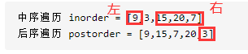

使用两种遍历结果构造二叉树
最近刷Leetcode时，遇到了一道题，给你一个二叉树的后序遍历和中序遍历的输入序列，如何把这棵树的结构构造出来？
下面贴出这道题的原地址从中序与后续遍历序列构造二叉树。
后序遍历和中序遍历的特点
不管是先序、中序、后序，它们的不同点在于访问根节点的时机，先序先访问根节点、后序最后访问根节点。
来看看原题给的样例。
1 | 中序遍历 inorder = [9,3,15,20,7] |
1 | 3 |
来观察一下，可以发现中序遍历的一个特征：在中序遍历的序列中，根节点左边是左子树，根节点右边是右子树。中序遍历序列从前往后看的规律是：左子树->根节点->右子树。
也可以发现后序遍历的一个特征：左子树的叶子节点最先找到，右子树的叶子节点次之，根节点最后找到。比如后序遍历最后一个元素为3，再看看后序遍历倒数第二个元素20，它是根节点3的右子树，20再往前的元素7则是20的右子树，那么后序遍历的规律很明朗了，从遍历序列后往前看，根节点->右子树->左子树。
这个遍历的性质很重要，如此一来就可以通过分治算法来将遍历结果转换为二叉树。
分而治之
根据上面二叉树的性质，可以先通过后序遍历的最后一个元素找到根节点3，然后去中序遍历中找到根节点3，找到以后就可以将3左边的元素判定为左子树，3右边的元素判定为右子树。

然后先递归地对右子树进行处理（因为我们看后序遍历是从后面往前看的），再递归地对左子树进行处理，得到地就是完整地二叉树。
完整代码
1 | class Solution { |
用中序和先序遍历构造二叉树
其实道理也是一样的，只不过变成了从前往后遍历先序序列，具体做法仍然是分治+递归建树。